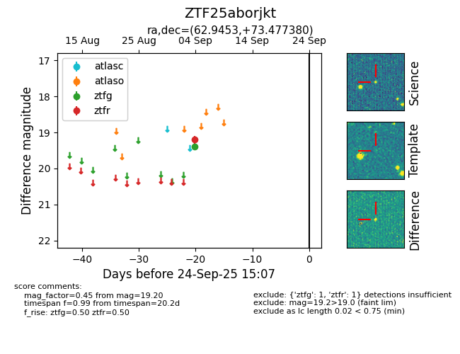

FINK: ZTF25aborjkt
Lasair: ZTF25aborjkt
ALeRCE: ZTF25aborjkt
ZTF25aborjkt (ztf,fink)
equatorial (ra, dec) = (62.9453,+73.47738)
galactic (l, b) = (136.0444,+15.94720)

last ztfg=19.39, ztfr=19.20
1 ztfg, 1 ztfr detections